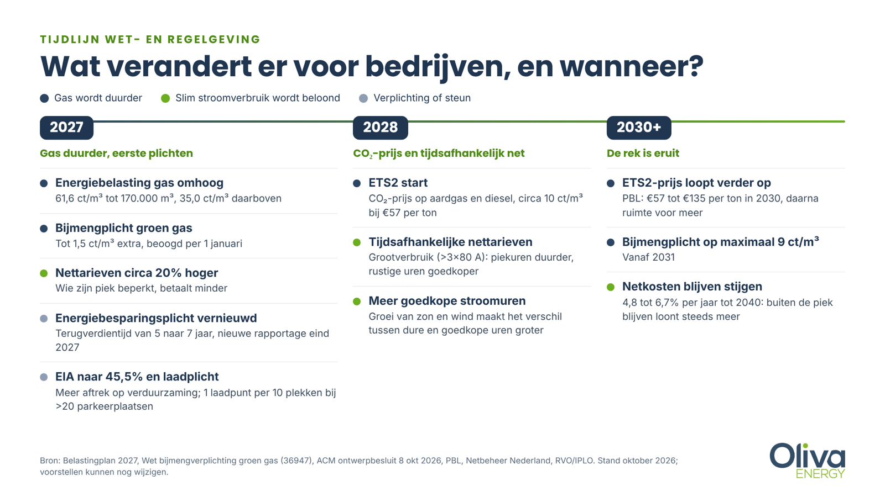
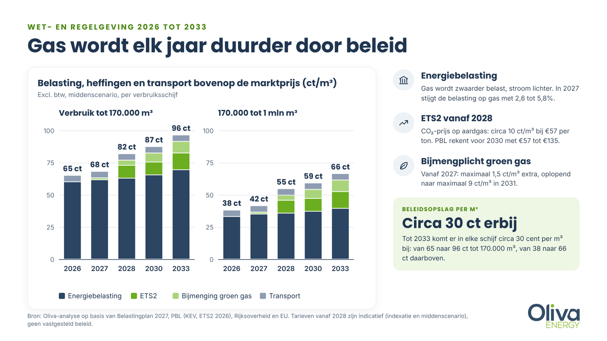
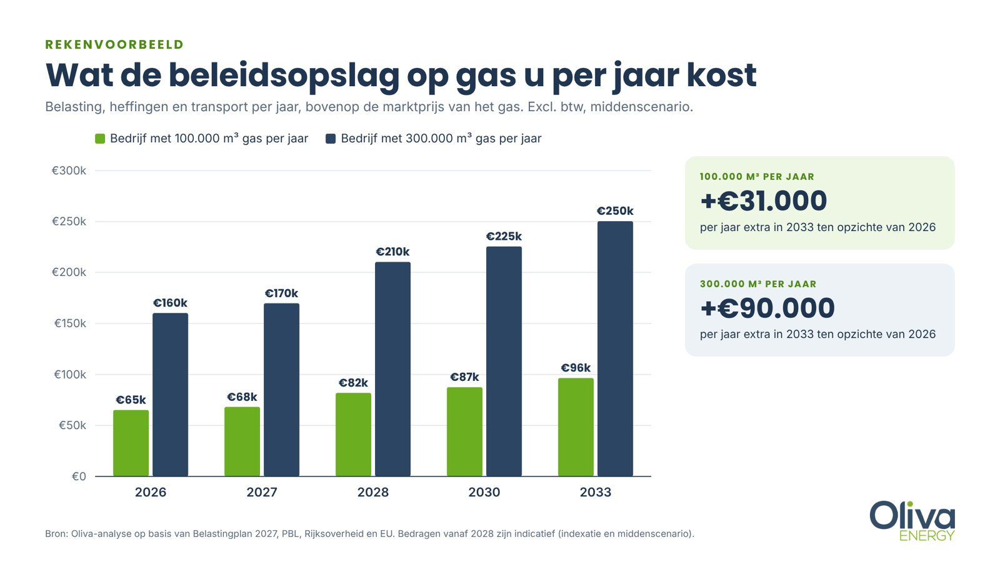
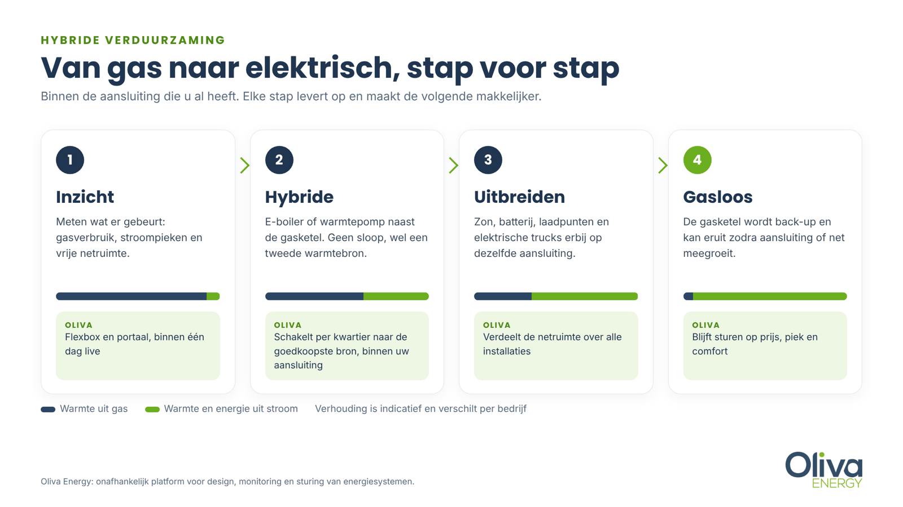

De energiewetgeving voor bedrijven verandert vanaf 2027 flink, en vooral gas wordt duurder. De energiebelasting stijgt, in 2027 komt de bijmengplicht voor groen gas en in 2028 start de Europese CO₂-prijs ETS2. Of uw bedrijf nu 50.000 of 500.000 m³ gas verbruikt: tot 2033 komt er naar verwachting circa 30 cent per m³ bij. Dat is alleen belasting, heffingen en transport, bovenop de marktprijs. Tegelijk wordt stroom gebruiken op rustige momenten voor grootverbruikers vanaf 2028 naar verwachting goedkoper. De boodschap van de wetgever is helder: van het gas af, en slim met stroom. In dit artikel leest u wat er per jaar verandert en hoe u met hybride verduurzaming stap voor stap overstapt, ook als uw aansluiting vol zit.
In het kort
- 2027: energiebelasting op gas omhoog en een bijmengplicht voor groen gas.
- 2027: hogere nettarieven, een vernieuwde energiebesparingsplicht en meer fiscaal voordeel via de EIA.
- 2028: ETS2 legt een CO₂-prijs op aardgas en diesel (circa 10 ct/m³), grootverbruikers krijgen tijdsafhankelijke nettarieven.
- 2030 en verder: ETS2-prijs kan verder oplopen, bijmengplicht tot maximaal 9 ct/m³, netkosten blijven stijgen.
- Volledig elektrificeren loopt vaak vast op de aansluiting. Hybride, met slimme sturing tussen gas en stroom, is de route die nu al kan.
Twee sporen: gas duurder maken en slim stroomverbruik belonen
Wie de regels van de komende jaren naast elkaar legt, ziet twee sporen. Het eerste spoor maakt gas stap voor stap duurder via belasting, CO₂-prijs en groen gas. Het tweede spoor beloont bedrijven die stroom gebruiken op het moment dat er ruimte en goedkope energie is, via tijdsafhankelijke nettarieven en een groeiend aantal uren met lage stroomprijzen.
Samen sturen ze op hetzelfde gedrag: minder gas en meer elektrisch. Dat elektrische verbruik hoort zoveel mogelijk plaats te vinden op momenten dat stroom goedkoop is en het net ruimte heeft. Vervangt u de gasketel door een elektrische die altijd draait? Dan krijgt u hoge piekkosten en een volle aansluiting. Het voordeel zit in de combinatie.

Energiewetgeving 2027: wat verandert er voor bedrijven?
Energiebelasting op gas stijgt opnieuw. Het kabinet belast gas al jaren zwaarder en stroom lichter. In het Belastingplan 2027 stijgt de belasting op gas in alle zakelijke schijven, terwijl die op stroom vrijwel gelijk blijft.
| Energiebelasting, excl. btw | 2026 | 2027 (Belastingplan) |
|---|---|---|
| Gas tot 170.000 m³ | 60,07 ct/m³ | 61,63 ct/m³ |
| Gas 170.000 tot 1 mln m³ | 33,09 ct/m³ | 35,01 ct/m³ |
| Stroom 10.000 tot 50.000 kWh | 6,67 ct/kWh | 6,78 ct/kWh |
| Stroom 50.000 kWh tot 10 mln kWh | 3,74 ct/kWh | 3,78 ct/kWh |
De tarieven voor 2027 zijn het voorstel uit het Belastingplan; het parlement stemt er in het najaar van 2026 over.
Nettarieven omhoog. Netbeheerders verwachten de transporttarieven voor elektriciteit per 1 januari 2027 met circa 20 procent te verhogen. De precieze stijging verschilt per netbeheerder. Voor grootverbruikers bestaat het nettarief grotendeels uit een vermogenscomponent: wie zijn piek verlaagt, merkt dat direct op de rekening.
Energiebesparingsplicht vernieuwd. Bedrijven die meer dan 50.000 kWh stroom of 25.000 m³ gas verbruiken, moeten alle maatregelen nemen die zich binnen een bepaalde tijd terugverdienen. Die termijn gaat in 2027 van 5 naar 7 jaar. Daardoor vallen meer maatregelen onder de plicht. Elektrische alternatieven verdienen zich bovendien sneller terug, omdat gas duurder wordt. De huidige rapportages lopen eind 2027 af, waarna een nieuwe rapportageronde volgt.
Bijmengplicht groen gas. Energieleveranciers moeten vanaf 2027 een groeiend deel groen gas bijmengen, van circa 0,16 miljard m³ in 2027 naar 0,84 miljard m³ in 2031. De overheid raamt de meerkosten op maximaal 1,5 cent per m³ in 2027, oplopend naar maximaal 9 cent per m³ in 2031.
Meer fiscaal voordeel. De Energie-investeringsaftrek (EIA) gaat volgens het Belastingplan van 40 naar 45,5 procent. Een investering op de Energielijst, zoals een warmtepomp of een batterij met energiemanagement, levert dan meer belastingvoordeel op. Een investeringsverplichting die u in 2027 aangaat, valt onder het hogere percentage.
Laadpunten bij bestaande gebouwen. Bestaande utiliteitsgebouwen met meer dan 20 parkeerplaatsen moeten vanaf 1 januari 2027 een laadpunt per 10 plekken hebben, of leidingen voor de helft van de plekken. Op een volle aansluiting lukt dat vaak alleen met slimme sturing.
Elektrisch vervoer. Ook voor wagenparken schuiven de regels op. In steeds meer gemeenten gelden zero-emissiezones voor bestelwagens en vrachtwagens, met strengere toegangsregels vanaf 1 januari 2027. Vanaf 2028 maakt ETS2 diesel duurder. Elektrische bestelwagens en trucks worden daarmee aantrekkelijker, maar laden op het eigen terrein vraagt veel vermogen op hetzelfde moment. Met slim laden en een batterij past een laadplein vaak op de bestaande aansluiting.
2028: een CO₂-prijs op gas en een nettarief dat per tijdstip rekent
ETS2 start. Op 1 januari 2028 gaat het Europese emissiehandelssysteem voor gebouwen, wegvervoer en kleine industrie van start. Brandstofleveranciers moeten dan rechten kopen voor de CO₂ van het gas en de diesel die zij leveren, en rekenen die kosten door. Bij een CO₂-prijs van 57 euro per ton komt dat neer op circa 10 cent per m³ aardgas. Het raakt vooral bedrijven die buiten het bestaande emissiehandelssysteem vallen, zoals de meeste voedingsbedrijven, betonwarenfabrikanten en koelhuizen.
Tijdsafhankelijke nettarieven voor grootverbruikers. De ACM publiceerde op 8 oktober 2026 het ontwerpbesluit: bedrijven met een aansluiting groter dan 3x80 ampère op het regionale net betalen vanaf 1 januari 2028 tijdsafhankelijke transporttarieven. Gebruik op drukke momenten wordt duurder, op rustige momenten goedkoper. Grootverbruikers op het hoogspanningsnet van TenneT betalen al sinds 2025 zo. Lees meer in ons artikel over dynamische nettarieven.
2030 tot 2033: de kosten lopen verder op
Na 2030 lopen de lijnen verder uit elkaar. Het Planbureau voor de Leefomgeving verwacht een ETS2-prijs tussen 57 en 135 euro per ton in 2030, ofwel circa 10 tot 24 cent per m³ gas. Als na 2030 de prijsdemping afloopt, kan de prijs verder stijgen. De bijmengplicht bereikt in 2031 haar maximum van circa 9 cent per m³. Netbeheer Nederland verwacht dat de nettarieven voor elektriciteit tot 2040 jaarlijks 4,8 tot 6,7 procent boven de inflatie stijgen.
Aan de stroomkant gebeurt iets anders. Het gemiddelde blijft ongeveer gelijk, maar het aantal uren met zeer lage of negatieve prijzen groeit: van 448 uur in 2024 naar 560 uur in 2025, en volgens Aurora Energy Research ruim een verdubbeling richting 2030. Wie zijn verbruik naar die uren kan verschuiven, wint.

Wat betekent dit voor uw energierekening?
Vertaald naar euro's: een bedrijf met 100.000 m³ gas per jaar betaalt in 2033 naar verwachting circa 31.000 euro per jaar meer aan belasting, heffingen en transport dan nu. Bij 300.000 m³ is dat circa 90.000 euro per jaar extra. En dat is nog vóór de marktprijs van het gas zelf.

Betekent dit dat u de gasketel morgen moet vervangen door een elektrische? Niet per se. Uit de Oliva-analyse (middenscenario 2030) blijkt:
- Warmte uit gas kost circa 9 tot 12,5 cent per kWh.
- Een elektrische boiler die altijd aanstaat, betaalt gemiddeld circa 15 cent per kWh en verliest het dan van gas.
- Dezelfde boiler die alleen in goedkope uren draait, betaalt circa 8 tot 11 cent per kWh en wint het wel.
- Een warmtepomp levert warmte voor circa 5 cent per kWh, maar vraagt een grotere investering en veel vermogen van de aansluiting.
Het rendement zit dus niet in vervangen, maar in schakelen: de goedkoopste bron op het juiste moment, binnen de ruimte die uw aansluiting biedt.
Waarom niet in één keer van het gas af?
Volledig elektrificeren is voor veel bedrijven het einddoel, maar zelden de eerste stap. De reden is netcongestie. In grote delen van Nederland staan bedrijven op een wachtlijst voor een zwaardere aansluiting, soms tot na 2030. Een warmtevraag van honderden kilowatts verhuizen van gas naar stroom past dan niet op de bestaande aansluiting. Daarnaast vraagt een volledige omschakeling een grote investering in één keer, terwijl de gasketel nog jaren mee kan.
Lees meer over netcongestie en hoe bedrijven het oplossen.
Hybride verduurzaming: stap voor stap van het gas af
Hybride verduurzamen betekent dat u een elektrische warmtebron naast de bestaande gasketel zet, en die twee slim laat samenwerken. De regel is eenvoudig: is er ruimte op de aansluiting en is stroom goedkoop, dan draait de installatie elektrisch. Zo niet, dan neemt gas het over. Zo verdient de investering zich terug terwijl u de aansluiting houdt die u al heeft.
Oliva Energy is daarbij uw partner. Ons platform is onafhankelijk: we sturen vrijwel alle merken en installaties aan, en werken samen met gecertificeerde installatiepartners die de techniek plaatsen. U krijgt één oplossing, van ontwerp en businesscase tot dagelijkse sturing.

- Inzicht. Breng in kaart wat er gebeurt: gasverbruik, stroompieken per kwartier en de vrije ruimte op de aansluiting. Met de Oliva Flexbox en het portaal is dat binnen een dag zichtbaar.
- Hybride. Plaats een e-boiler of warmtepomp naast de gasketel. Oliva schakelt per kwartier naar de goedkoopste bron en bewaakt dat de aansluiting niet wordt overschreden.
- Uitbreiden. Voeg zon, een batterij, laadpunten of elektrische trucks toe aan dezelfde aansluiting. Oliva verdeelt de beschikbare netruimte over alle installaties.
- Gasloos. De gasketel wordt back-up en kan eruit zodra de aansluiting of het net meegroeit.
Elke stap levert op en maakt de volgende stap makkelijker. U koopt tijd tot de netuitbreiding er is, en u profiteert vanaf 2028 van de lagere tarieven in rustige uren.
Zo werkt het in de praktijk
- Betonfabriek, Noord-Brabant. Een prefab-betonfabriek met een begrensd netcontract en nul teruglevering gebruikt het zonne-overschot voor proceswarmte, met warmtepompen naast de bestaande installatie. Resultaat: circa 60.000 m³ minder aardgas per jaar. Bekijk het project
- Vakantiepark, Zeeland. Landal Schouwse Valleien bouwt 135 volledig elektrische vakantiewoningen op een aansluiting van 3x200 ampère. Zonder sturing was 1.800 kVA nodig; met batterijen en een slimme volgorde past het park op een fractie daarvan. Bekijk het project
- Laadplein, Midden-Nederland. Zestien laadpunten erbij voor de laadplicht van 2027, zonder netverzwaring, dankzij slim laden en een batterij voor de ochtendpiek. Dezelfde aanpak werkt voor het depotladen van elektrische bestelwagens en trucks. Bekijk het project
Wat kunt u nu al doen?
- Zoek uit in welke verbruiksschijf uw gas valt en wat de beleidsopslag u de komende jaren kost.
- Controleer of u onder de energiebesparingsplicht valt en wanneer uw volgende rapportage moet.
- Bekijk uw warmtevraag: welk temperatuurniveau, welke buffers, en welk deel elektrisch kan.
- Plan investeringen rond de EIA van 2027 en houd regelingen als Flex-e van RVO in de gaten.
- Meet uw stroompieken per kwartier, zodat u klaar bent voor de tijdsafhankelijke nettarieven van 2028.
Benieuwd wat dit voor uw bedrijf betekent?
Oliva Energy helpt bedrijven stap voor stap van het gas af, binnen de aansluiting die ze al hebben. Samen met onze installatiepartners maken we een energiescan van uw locatie: wat de regels u kosten, welke stap als eerste rendeert en hoe uw installaties samenwerken.
Vraag een gratis energiescan aan of bel 085 0050 440Veelgestelde vragen
Welke energiewetgeving verandert er in 2027 voor bedrijven?
In 2027 stijgt de energiebelasting op gas, komt er een bijmengplicht voor groen gas en stijgen de nettarieven naar verwachting met circa 20 procent. Daarnaast wordt de energiebesparingsplicht aangescherpt en gaat de EIA naar 45,5 procent. In 2028 volgen ETS2 en tijdsafhankelijke nettarieven voor grootverbruikers.
Hoeveel energiebelasting betaalt een bedrijf in 2027 op gas?
Volgens het Belastingplan 2027 is dat 61,63 cent per m³ tot 170.000 m³ en 35,01 cent per m³ van 170.000 tot 1 miljoen m³, exclusief btw. In 2026 was dat 60,07 en 33,09 cent. Het parlement stemt in het najaar van 2026 over het voorstel.
Wanneer gaat ETS2 in en wat kost het per m³ gas?
ETS2 start op 1 januari 2028. Bij een CO₂-prijs van 57 euro per ton komt dat neer op circa 10 cent per m³ aardgas. Het PBL verwacht voor 2030 een prijs tussen 57 en 135 euro per ton, ofwel circa 10 tot 24 cent per m³.
Wat is de bijmengverplichting groen gas en wat kost die?
Energieleveranciers moeten vanaf 2027 een groeiend deel groen gas bijmengen. De overheid raamt de meerkosten op maximaal 1,5 cent per m³ in 2027, oplopend naar maximaal 9 cent per m³ in 2031. De Eerste Kamer moet de wet nog goedkeuren.
Wat zijn tijdsafhankelijke nettarieven en wanneer gelden ze voor mijn bedrijf?
Bij tijdsafhankelijke nettarieven is netgebruik op drukke momenten duurder en op rustige momenten goedkoper. Voor bedrijven met een aansluiting groter dan 3x80 ampère op het regionale net gaan ze volgens het ontwerpbesluit van de ACM in op 1 januari 2028. Op het TenneT-net gelden ze al sinds 2025.
Wat verandert er aan de energiebesparingsplicht in 2027?
Vanaf 2027 gaat de terugverdientijd van 5 naar 7 jaar, waardoor meer maatregelen verplicht worden. De ondergrens blijft 50.000 kWh stroom of 25.000 m³ gas per jaar. De huidige rapportages lopen eind 2027 af, waarna een nieuwe ronde volgt.
Wat is hybride verduurzaming voor bedrijven?
Hybride verduurzaming betekent een elektrische warmtebron, zoals een e-boiler of warmtepomp, naast de bestaande gasketel. Een energiemanagementsysteem kiest per kwartier de goedkoopste bron binnen de ruimte van de aansluiting. Zo daalt het gasverbruik zonder te wachten op netverzwaring.
Kan mijn bedrijf van het gas af als de aansluiting vol is?
Vaak wel, stap voor stap. Door elektrisch te verwarmen op momenten dat er ruimte is, pieken af te vlakken met een batterij en zonnestroom zelf te gebruiken, past meer op dezelfde aansluiting. Volledig gasloos lukt meestal pas als de aansluiting of het net meegroeit.
Welke fiscale regelingen helpen bij de overstap?
De Energie-investeringsaftrek (EIA) gaat volgens het Belastingplan 2027 van 40 naar 45,5 procent voor investeringen op de Energielijst. Daarnaast heeft RVO regelingen als Flex-e voor flexibel elektriciteitsverbruik; check bij RVO of er een openstelling loopt.